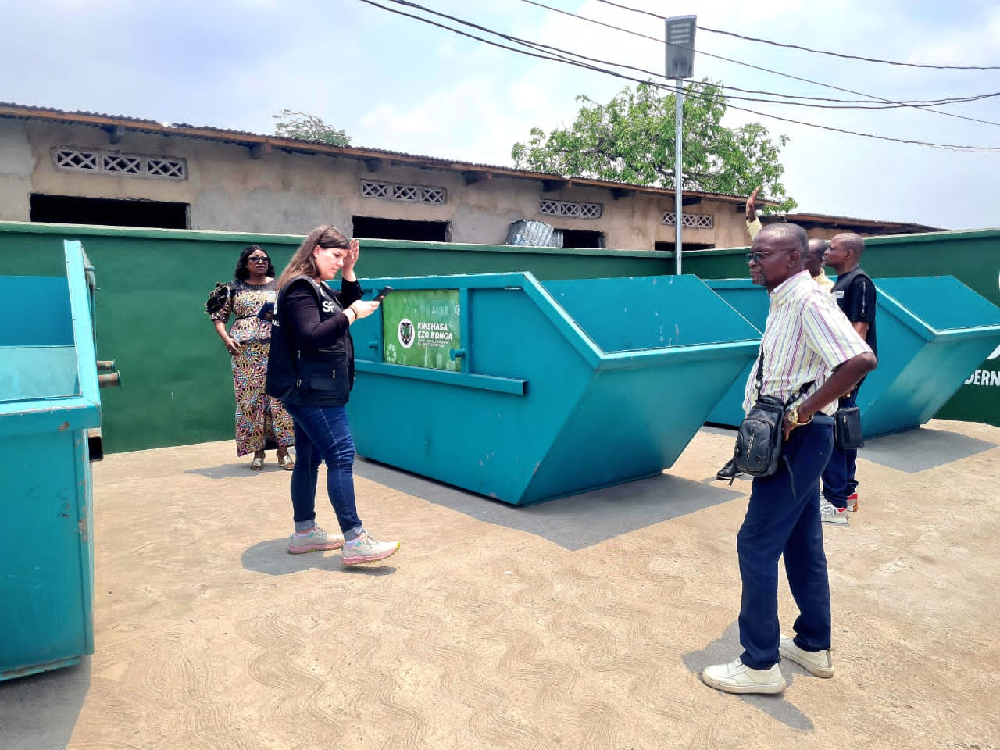
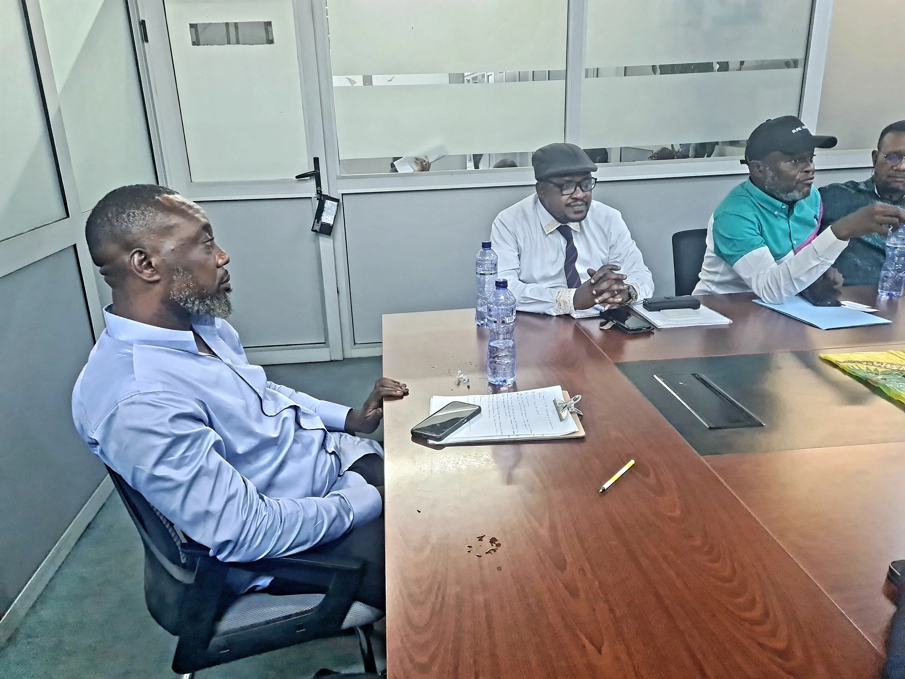
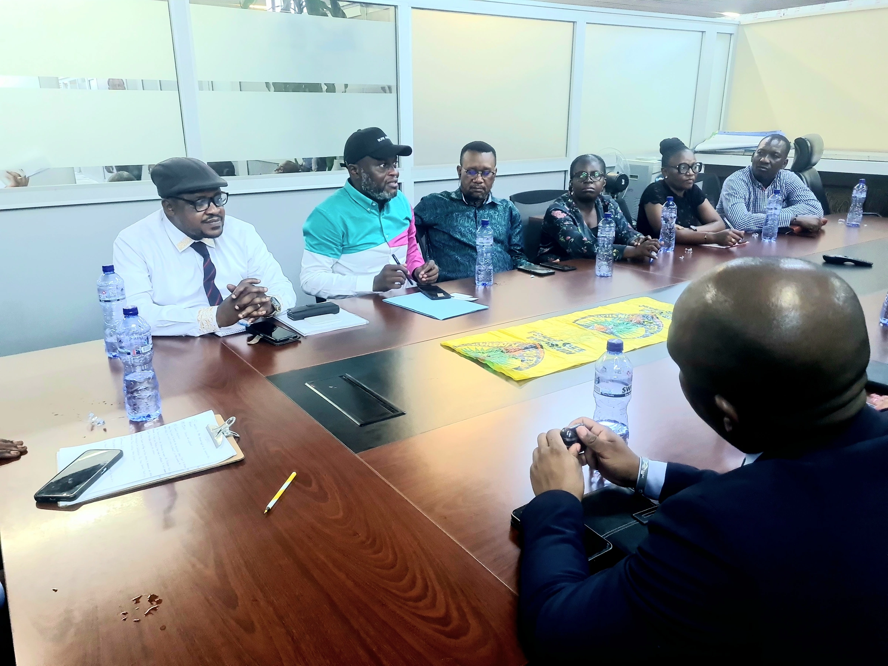
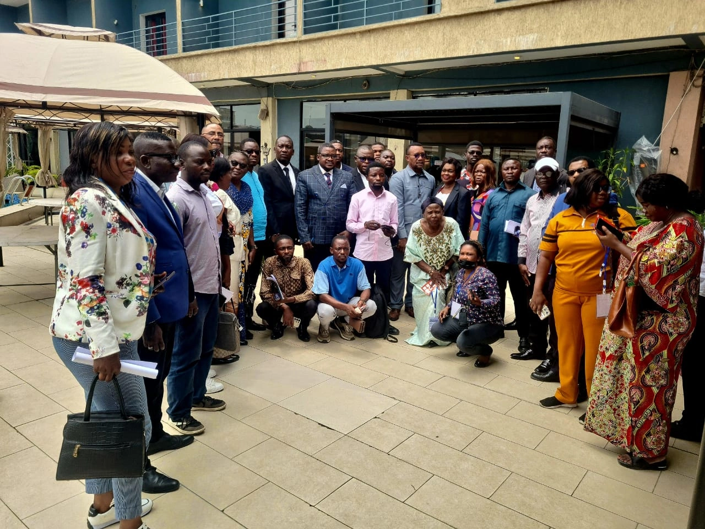
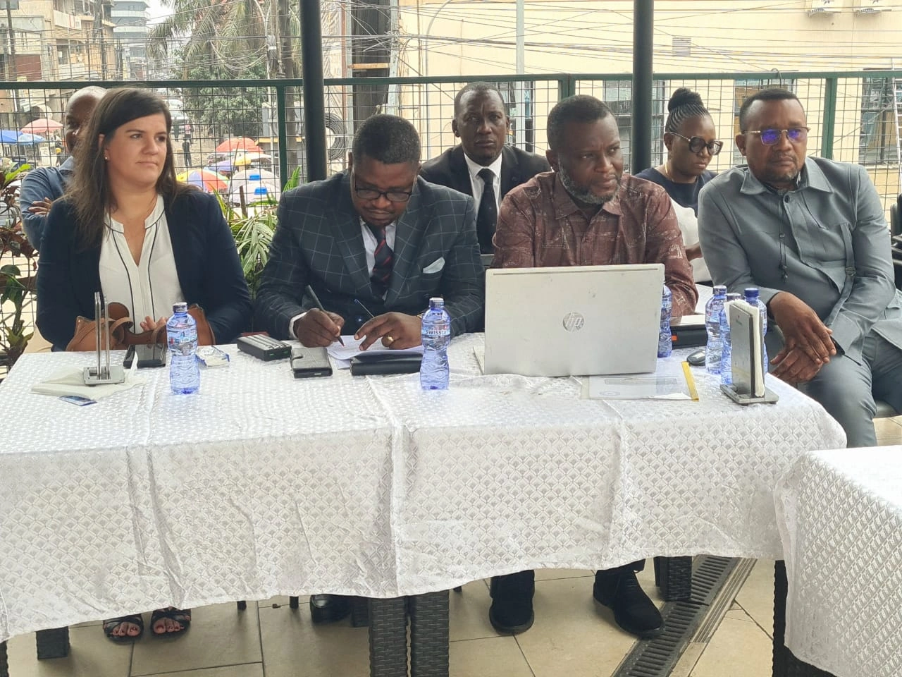
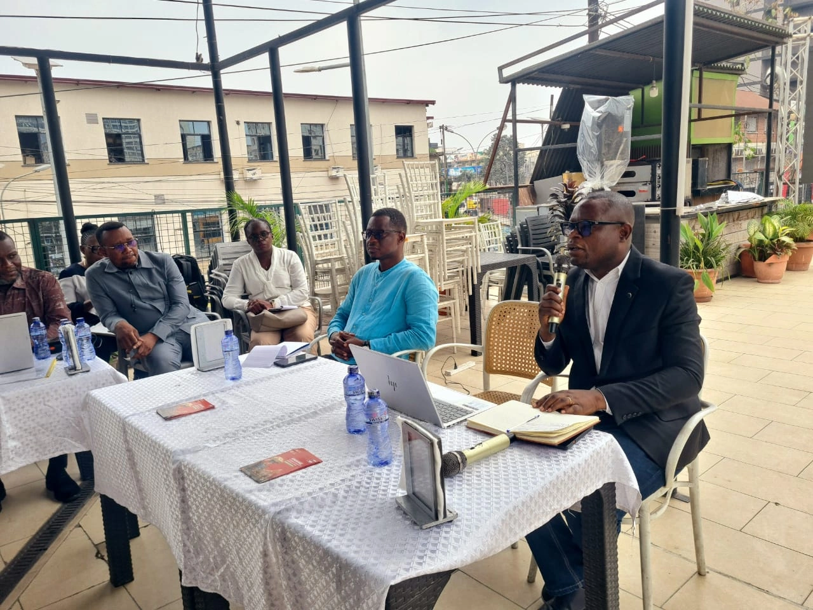

Revue de presse
L’eau verte, un nouveau chantier stratégique pour la RDC
Green Impact Média présente les enjeux liés à la valorisation de l’eau verte et à la stratégie hydrique de la RDC.
Lire l’articleFECGD-RDC
La FECGD-RDC est la Fédération des entreprises de collecte, de gestion et de valorisation des déchets de la République démocratique du Congo. Elle rassemble des métiers complémentaires autour d’un même enjeu : améliorer la prise en charge des déchets.
Collecte, gestion et valorisation.
Les métiers représentés par la fédération.
LA FÉDÉRATION
La FECGD-RDC est une association sans but lucratif de droit congolais. Établie à Kinshasa, elle a vocation à représenter, défendre et promouvoir les intérêts professionnels de ses membres à l’échelle nationale.
Qui sommes-nous ? ↗ACTUALITÉS
Green Impact Média présente les enjeux liés à la valorisation de l’eau verte et à la stratégie hydrique de la RDC.
Lire l’articleL’engagement en faveur de l’assainissement et de la protection de l’environnement reçoit une nouvelle reconnaissance.
Lire l’articleAprès Antalya, Green Impact Média revient sur les engagements attendus pour la transition énergétique.
Lire l’articleÀ Bibwa Mpassa III, Green Impact Média alerte sur les inondations et les difficultés liées à l’urbanisation.
Lire l’articleÀ Kinshasa, l’assainissement pourrait aussi commencer par la transformation des déchets en énergie.
Lire l’articleTransition énergétique et financements climatiques : les enjeux africains au cœur d’un article de Green Impact Média.
Lire l’articleÀ la COP31, la crédibilité de la transition énergétique se joue aussi dans les financements.
Lire l’articleLes feuilles de route sont présentées comme une réponse à la dépendance énergétique et à l’instabilité des coûts des énergies fossiles.
Lire l’articleComment préserver les terres pour garantir l’avenir alimentaire de Kinshasa ? Un article de Green Impact Média.
Lire l’articleUne promesse personnelle devient un engagement collectif avec la Fondation Ailes Dado Espoir de Vie.
Lire l’articleÀ la COP31, le pavillon « RDC – Pays-Solution » est présenté comme un espace de dialogue et de partenariats.
Lire l’articleL’électrification est présentée comme un levier pour réduire la dépendance aux combustibles fossiles et construire un modèle énergétique plus juste.
Lire l’articleRetrouvez le journal écologique hebdomadaire de Green Impact TV sur YouTube.
Lire l’articleAu Sud-Kivu, la diminution des abeilles suscite des inquiétudes pour les cultures et les familles rurales. Un éclairage de Green Impact Média sur le rôle des pollinisateurs.
Lire l’articleL’affiche annonçait une matinée d’information et de sensibilisation le 19 novembre 2026, de 9 h à 13 h, dans la salle de réunion de la FEC.
Lire l’article
Green Impact Média invite le public à signaler et à partager les situations observées dans son environnement.
Lire l’articleUne vidéo de la REGEDEK à partager autour de la formalisation, de la collecte et de la valorisation des déchets, de l’opportunité et de l’employabilité.
Lire l’article
À la JIDEEE 2026, Mme Fanny Aude SALMON anime un panel sur les solutions circulaires et les opportunités de valorisation des déchets électroniques et de création d’emplois verts.
Lire l’articleMme Fanny Aude SALMON reçoit Murphy TSHIBANGU, alias Ghost BAZANGA MAWA, pour amplifier la sensibilisation citoyenne à la gestion responsable des déchets.
Lire l’articleRetour sur la rencontre du 8 octobre 2026 entre la REGEDEK et la Ministre déléguée à la Nouvelle Économie du Climat, consacrée aux financements de l’assainissement.
Lire l’articleAu SEIC 2026 à Kinshasa, Mme Fanny Aude SALMON, Directrice générale de la REGEDEK, intervient sur la durabilité et la RSE, au service d’entreprises responsables et performantes.
Lire l’article

À Ngiri-Ngiri, autorités et acteurs de l’assainissement préparent le fonctionnement du centre de transfert des déchets. Retour sur la concertation du 21 octobre 2026.
Lire l’article




Une sélection de photographies des rencontres de la fédération.
Lire l’articleL’exemple des pavés de Gjenge Makers au Kenya illustre une possibilité de transformation, avec les exigences de qualité et de sécurité propres à chaque usage.
Lire l’articleLes déchets abandonnés gênent l’écoulement des eaux et dégradent les espaces de vie. Retrouvez les enjeux présentés sur le site et la source OMS.
Lire l’article
Comprendre les liens entre les trois domaines d’activité représentés par la fédération.
Lire l’article



À l’Hôtel Léon 2, à Kinshasa, une première rencontre de concertation a réuni les entreprises et les partenaires du secteur le 26 septembre 2026.
Lire l’articleDécouvrez les métiers représentés et présentez votre organisation à la fédération.
Préparer une demande ↗